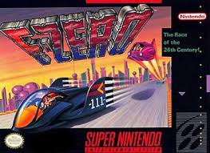
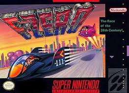

Super Nintendo Entertainment System
The Super Nintendo was Nintendo's first 16-bit console. The first 16-bit console ever released was called the Turbo Grafx-16 in North America and the PC Engine everywhere else. Although it had much better graphics than its competitors at the time, it didn’t do nearly as well as the NES. The next major player in the 16-bit era was the Sega Genesis, released in 1988 in Japan and 1989 in North America. Following the disappointing performance of the Master System, Sega utilized an aggressive marketing campaign, demonstrating how the Sega Genesis was much more powerful than the NES. Nintendo took a couple of years to retaliate, during which time Sega managed to get a decent amount of market share. Nintendo’s 16-bit console was called the Super Nintendo Entertainment System, which boasted superior graphics to any of its competitors, with a price tag to go with it. Sega and Nintendo continued to battle for their share of the market, ending up with comparable sales numbers, around 40-50 million units each.
 
